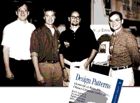
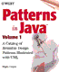
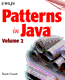
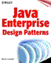

| LevSelector.com |
Design Patterns
- intro & common patterns
- algorithms
- UML
| intro & common patterns | home - top of the page - |
| History:
• 1970-s: "A Pattern Language" , by C. Alexander, et al. , 1977 (available at amazon.com) • 1980-s: Hillside Group - Beck, Ward, Coplien, Booch, Kerth, Johnson, etc. • 1995 - the famous book - "Design Patterns: Elements of Reusable Object Oriented Software", 1995, by the so-called Gang of Four (GoF), that is Erich Gamma, Richard Helm, Ralph Johnson and John Vlissides - see their photo:  |
Common patterns - examples
in Java:
A 3-volume series "Patterns in Java" by Mark Grand contains approx. 135 patterns with Java code examples on CDs. See patterns descriptions on Mark Grand's home page which has outlines of all 3 volumes: • vol1 - basic 41 patterns • vol2 - 50 patterns that apply to phases of the software development cycle other than design • vol3 - 44 patterns for the enterprise Here is a one-page compilation of all 3 outlines. 
|
• http://g.oswego.edu/dl/pd-FAQ/pd-FAQ.html
- FAQ
• http://hillside.net/patterns/patterns.html
- Patterns Page
Here is a list of some common patterns:
Model-View Controller | The Clone Idiom | Prototype
| Factory | Singleton | Abstract Factory | Bridge | Proxy | Iterator |
Composite | Flyweight | Interpreter | Visitor | Chain of Responsibility
| Memento | Command | All of Me | State | Decorator | Observer | Adapter
| Facade | Template | Mediator | Strategy
See longer list with definitions and examples here:
• http://wiki.cs.uiuc.edu/PatternStories/DesignPatterns
• http://hillside.net/patterns/catalogs/
• gee.cs.oswego.edu/dl/cpj/
- Concurrent Programming in Java : Design principles and patterns. Online
Supplement to the book.
• g.oswego.edu/dl/ca/
- Christopher Alexander: An Introduction for Object-Oriented Designers
• wwwseg.cs.hut.fi/tik-76.278/group6/awtpat.html
- Patterns in Java AWT
• www.industriallogic.com/papers/learning.html
- A Learning Guide To Design Patterns
• www.industriallogic.com/patterns/index.html
- The Design Patterns Study Group of New York City
• www.swtech.com/dpattern/
- very good site
• www.swtech.com/dpattern/books/
- list of books (links to amazon.com)
• www.meurrens.org/ip-Links/java/designPatterns/books.html
- another list of books (goes back to 1977 C.Alexander).
• www.akumiitti.fi/~orava/TKK/patterns/
- Design Patterns and the Java AWT - article discusses prototype application
• www.alumni.caltech.edu/~croft/research/java/pattern/
- Design Patterns in Java : Conservator, Observer, Singleton, Waiter.
• www.hillside.net//patterns/books/
- list of books with short descriptions
• www.irisa.fr/prive/jezequel/DesignPatterns/
- Introduction to "Design Patterns and Contracts" (Book)
• www.patterndepot.com/put/8/JavaPatterns.htm
- The "Design Patterns Java Companion" by James W. Cooper
(Download the entire book as a zipped PDF file, or download all of
the Java example code)
• www.cs.wustl.edu/~schmidt/patterns-ace.html
- Patterns for Concurrent, Parallel, and Distributed Systems
| Algorithms | home - top of the page - |
• www.pads.uwaterloo.ca/Bruno.Preiss/books/opus5/html/book.html
- Data Structures and Algorithms with Object-Oriented Design Patterns in
Java (by Bruno R. Preiss,, Canada)
| UML | home - top of the page - |
FAQs:
• www.rational.com/uml/gstart/faq.jtmpl
- quick start FAQ
• www.microgold.com/Stage/UML_FAQ.html
- old faq
• www.uml-zone.com/umlfaq.asp
-
• www4.informatik.tu-muenchen.de/papers/KER99.html
-
• coweb.cc.gatech.edu/cs2340/255
-
• www.jguru.com/jguru/faq/faqpage.jsp?name=UML
-
• www.cs.ukc.ac.uk/pubs/1999/977/
-
Links:
• www.dmoz.org/Computers/Software/Object_Oriented/Methodologies/UML/
- UML on "Open Directory"
• www.cetus-links.org/oo_uml.html
- many links, structured by subject
• www.google.com/search?q=UML&cat=gwd%2FTop%2FComputers
- UML on Google
Books (UML):
The definitive guides are from Grady Booch, Jim
Rumbaugh, and Ivar Jacobson (The Addison-Wesley Object Technology Series)
:
•
The
Unified Modeling Language User Guide
•
The
Unified Modeling Language Reference Manual
•
Unified
Software Development Process
• UML Distilled,
Second Edition: A Brief Guide to the Standard Object Modeling Language
(The Addison-Wesley Object Technology Series) by Martin Fowler, Kendall
Scott (Contributor), Grady Booch
• Fundamentals of
Object-Oriented Design in UML (The Addison-Wesley Object Technology Series)
by Meilir Page-Jones, Larry L. Constantine
• Applying UML and
Patterns - The Complete Video Course (Boxed Set) [NTSC] by Craig Larman
• www.softpro.com/softpro/object-oriented-uml.html
- books about UML.
• www.rosearchitect.com/
- Rose Architect - magazine (free)
• www.rational.com/uml/gstart/online.jtmpl
- online tutorials
More Links:
• www.iconixsw.com/Spec_Sheets/UnifiedOM.html
- A Unified Object Modeling Approach - includes a brief but illustrated
introduction to UML.
• stud2.tuwien.ac.at/~e8726711/ummw1.html
- this article has relatively full explanation of UML.
• www.rational.com/uml
- A Unified Modeling Language Resource Center is available at Rational
Software.
• www.rational.com/uml/resources/documentation/index.jtmpl-
documentation
• www.platinum.com/corp/uml/uml.htm
- Computer Associates UML Center
• www.ics.uci.edu/pub/arch/uml/uml_books_and_tools.html
- UML books and tools
• www.objectsbydesign.com/
- Objects by Design (tools, etc.)
• www.qoses.com/
- QOSES - portal
• www.sdmagazine.com/uml/
- Software Development Online
• www.objectnews.com/uml.htm
- Object News newsletter
Tools:
• www.rational.com/products/rose/index.jtmpl
- Rational Rose - the world's leading visual modeling tool.
• www.togethersoft.com/together/togetherJ.html
- TogetherJ from TogetherSoft
• www.cetus-links.org/oo_ooa_ood_tools.html
- lists many tools
• www.magicdraw.com
- MagicDraw is a visual UML modeling and CASE (computer-aided software
engineering) tool with teamwork support.
• www.ArgoUML.org
- open source
• www.gentleware.com/products/index.php3
- commercial version of ArgoUML called Poseidon for UML . The community
addition is free which includes all UML diagrams and all implemented diagram
elements. You can save and load projects, generate Java code, reverse engineer
from Java code and much more. It offers everything ArgoUML offers plus
some extra features like undo/redo, drag-and-drop, copy/cut/paste and a
better stability.
• www.sparxsystems.com.au/ea_downloads.htm
- a tool called Enterprise Architect. It is relatively cheap(less
than $200) and fullfills our needs which consist mostly of documenting
Use Cases, Class Diagrams and Sequence Diagrams. It also does code
generation.